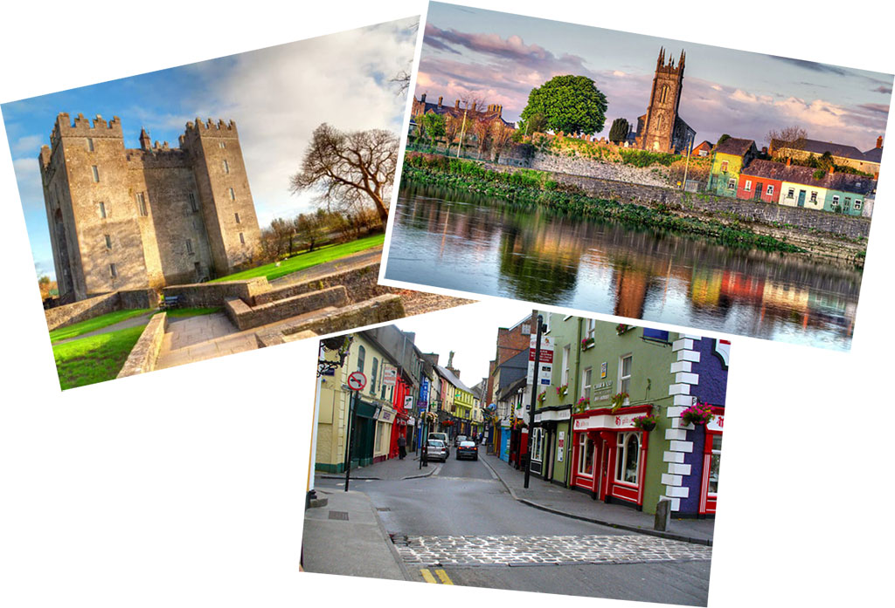
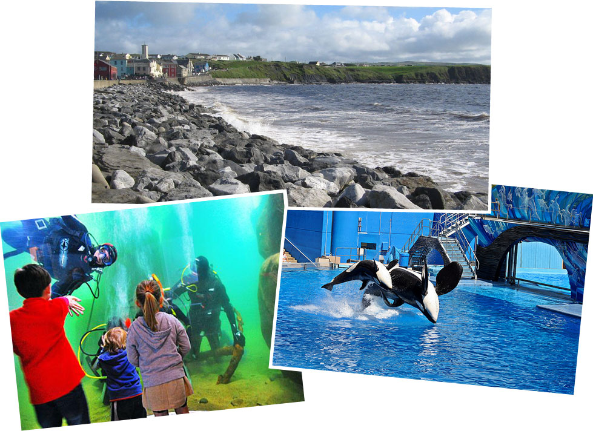

Ирландия — это остров, который омывается с одной стороны Атлантическим океаном, а с другой — Ирландским морем, которое отделяет остров от Британии. Вот от океана до моря мы и поедем по небольшим дорожкам мимо скал, лугов и лесов, мимо замков и озер.
В Ирландии будет очень интересно, ведь Ирландия кажется мостиком между Британией и Европой. В Ирландии интересно сочетаются их черты. В Ирландии — левостороннее движение. Как в Британии. Но валюта — евро. Как в Европе. В Ирландии - своя виза, хотя пускают и по английской. Но Ирландия не собирается покидать Евросоюз. Словом, в Ирландии будет не только интересно кататься, но и просто побывать, отведать «ирландского рагу»...
Маршрут относится к категории стандартных (несложных), без особого рельефа. Комфортное двухместное размещение в гостиницах. Машина сопровождения, гид — все как обычно. Поехали!
Обратите внимание: Ирландия не Шенген. Сюда требуется либо своя виза, либо пускают по английской. Кстати, можно убить двух зайцев, посетив два наших маршрута, которые идут встык: Ирландию и Англию, с переездом из страны в страну на нашем микроавтобусе.
После прилета мы размещаемся в городе Лимерик. Это не просто город — это еще и стихотворная форма. Пять строк с формой ААВВА. Лимерик - это веселый стих, возможно, сродни русской частушке:
Один старикашка с косою
Гонялся полдня за осою.
Но в четвертом часу
Потерял он косу
И был крепко укушен осою.
Где грань между английским юмором и ирландским нам еще предстоит выяснить.

В этот день мы едем по дорожкам графства Шеннон, заедем в два замка, в одном из которых очень интересная экспозиция, посвященная истории Ирландии. Мы увидим не только леса и поля, но и настоящий фьорд.

Сегодня мы выезжаем к океану. Если повезет с погодой, то посетим пляж, тем более, что он в 100 метрах от нашего отеля. После ходового дня запланирован визит в ирландский океанариум.

Вероятно, самые красивые виды на океан — в этих местах. Тут берег скалистый. Дорожка вьется вдоль берега, подходя к смотровым площадкам. Америку не видно, даже с высоты, но океанский накат и скалы потрясают. Другая достопримечательность дня — пещера, в которой находится самый большой сталактит Северного полушария Земли.

Вновь едем вдоль океана, мимо замка Дангвайр (16 век) … кстати, замок красиво стоит на полуостровке, с трех сторон окруженным водой. К вечеру приезжаем в Голуэй. Это морской город 13 века. За 15 лет до открытия Америки его посетил Колумб. Сегодня город знаменит не только старым центром, но и местными устрицами. На этом океанская часть нашего путешествия завершается, и мы едем к морю!

Сегодня едем по «континентальной», то есть, самой удаленной от морей части Ирландии. Едем по небольшим холмикам, мимо полей и лугов. В этих местах создается веломаршрут, который проходит по старой, разобранной железной дороге. Ехать по нему будет прекрасно, так как въезд автомобилей на него запрещен. Большая часть нашего пути проходит по этому рейл трейлу.

Да, Ирландия — небольшая страна. Вчера мы были на берегу океана, а сегодня уже остановимся в пригороде Дублина - столицы страны, расположенной на берегу Ирландского моря. Часть нашего пути пройдет вдоль каналов и по живописным дорожкам, которые идут небольших деревень и городков. Финиш в пригороде Дублина, достаточно близко, чтобы съездить осмотреть достопримечательности Ирландской столицы, но и не в центре, чтобы избежать въезда в полумиллионный город.
На этом наше путешествие заканчивается. Но вы можете его и продлить, переехав с гидами на восьмой день вечером в Англию, где продолжить кататься на велосипеде по маршруту «По старой доброй Англии».
NB. Данное описание - это план путешествия. Организаторы сохраняют за собой право на его изменение в зависимости от конкретной ситуации.
Подать заявку можно со страницы Календарь.
Для оформления страницы использованы фотографии с ресурсов: www.clare.ie/place/lahinch/,
{/block}